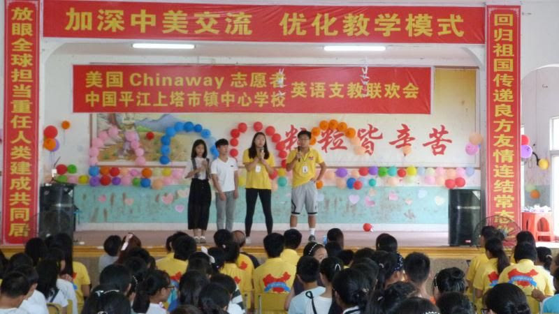

Global
In 2018, co-founder and CEO Rayan Yu had only heard of the extreme impoverishment in rural countries. To find out and assist on his own, Rayan pioneered a two month volunteering mission to the rural county of PingJiang, Hunan, China, a location of significant poverty for many families and children. When he got there, he witnessed firsthand: the accounts he had heard of were more than true. Students were studying under depressingly destitute conditions, with little to no progress at all. Throughout the trip, Rayan personally visited students homes to assist in their education, experiencing the true ordeals of countless childrens' lives. After personally tutoring, living with, and helping countless students for 8 hours a day, Rayan understood how fragmented opportunities truly were for such an unimaginable portion of the global youth.
Local
At the same time, soon-to-be partner Andrew Tran saw the same issues in his own school. Growing up in Falls Church, VA, Andrew was constantly reminded how privileged his area was. However, going into high school, it clearly didn't seem that way. At Justice High School (formerly known as Jeb Stuart), Andrew saw how bleak circumstances really were just in his own area. With factors like 65% of all students on free/reduced lunch, a complete lack of any CS program, and more, Andrew sought to seek out more holistic opportunity for himself and his peers.
To Do More
"Because the people who are crazy enough to think they can change the world are the ones who do." - Steve Jobs